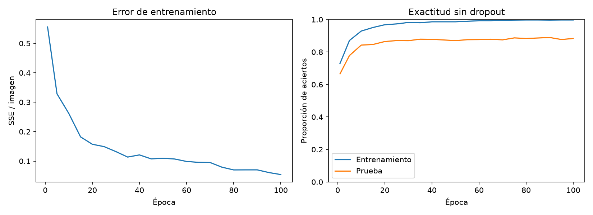
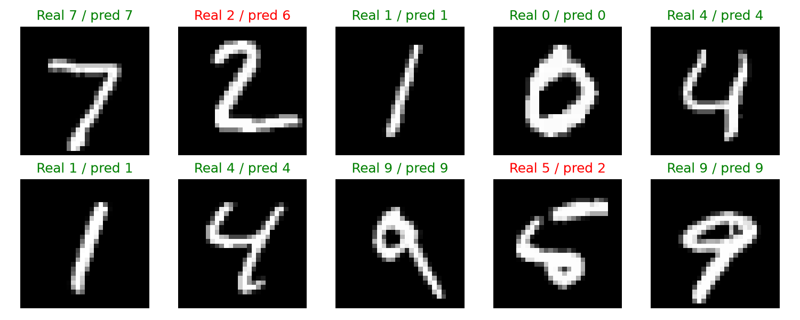

UNIDAD 1 / EVIDENCIA DE EJECUCIÓN2026-11-20T16:33:11.877450-06:00 · 3.49 s · EJECUTADO · código de salida 0
Comando ejecutado
python 08-talleres/01-red-neuronal/red_mnist.py
Salida de la ejecución
MNIST: 60000 imágenes originales de entrenamiento; prueba: 10000.
Entrenamiento didáctico: 1000 imágenes, 784-100-10, 100 épocas, lote=32.
ReLU + dropout 0.5; pérdida = SSE promedio por imagen; semilla=2430085.
Época 1: SSE=0.5559, exactitud train=73.00%, test=66.59%
Época 5: SSE=0.3285, exactitud train=87.10%, test=77.83%
Época 10: SSE=0.2621, exactitud train=92.90%, test=84.25%
Época 15: SSE=0.1823, exactitud train=95.10%, test=84.64%
Época 20: SSE=0.1572, exactitud train=96.80%, test=86.45%
Época 25: SSE=0.1492, exactitud train=97.30%, test=87.04%
Época 30: SSE=0.1323, exactitud train=98.20%, test=86.97%
Época 35: SSE=0.1137, exactitud train=98.00%, test=87.90%
Época 40: SSE=0.1210, exactitud train=98.60%, test=87.82%
Época 45: SSE=0.1075, exactitud train=98.60%, test=87.42%
Época 50: SSE=0.1098, exactitud train=98.60%, test=87.02%
Época 55: SSE=0.1070, exactitud train=98.90%, test=87.58%
Época 60: SSE=0.0988, exactitud train=99.30%, test=87.64%
Época 65: SSE=0.0957, exactitud train=99.30%, test=87.87%
Época 70: SSE=0.0952, exactitud train=99.50%, test=87.49%
Época 75: SSE=0.0794, exactitud train=99.60%, test=88.69%
Época 80: SSE=0.0700, exactitud train=99.70%, test=88.32%
Época 85: SSE=0.0702, exactitud train=99.70%, test=88.63%
Época 90: SSE=0.0702, exactitud train=99.60%, test=88.94%
Época 95: SSE=0.0610, exactitud train=99.70%, test=87.69%
Época 100: SSE=0.0543, exactitud train=99.70%, test=88.34%
Evaluación final independiente: 8834/10000 aciertos.
Salida completa: 08-1-red-neuronal.txt · SHA-256 del código: 06441c5580338402efd5…

curvas.png · archivo generado por la práctica
predicciones.png · archivo generado por la prácticaCaptura del reporte HTML construido a partir de la ejecución real. Consulta el código, el TXT y registro_ejecuciones.json para reproducirla.